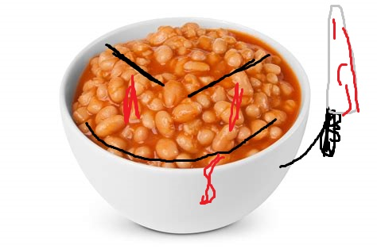

This whole thing started on account of all the ß̴̯̻͓̹͉̜̤̦͚̠̹̫͔͍͇́͊͋̄̀̓̔̑́́͒̍̕̚͠ę̶̢̻͇̙͇̜̻̦̙̣̟̭̭̂̂̄͆͂͆̃̈́̒͐̄̑̎̑͒̌ą̷̭̻̹̝̭̝̙̜͇̗̣̮̝̘̊̀̊̓̿͌͐̀̿̄̉́̓̑̚͠ñ̷̼͎̥̮̩̝̗̝̙̺̳͙͇̰̼̻̓͋̌́̓͂̓̿̎̀͌͗͆̍̚§̴̧̜͖͖͎͕̳̭͍̥̮̦̼͓̣͚̐̋̂̃̅̀͆͒̓̽̽͊̅͐w̷̨̡̤̼͈̩͈͔̰̪̘̲͙̍̇̉͑͗̾̌̅̈̓͒͐̓͂͝ͅͅå̵̡̗̠͔̜͙̝͈̼̝̬̱͖̗̓̽̉̈́̒̒̾̐̋̽̇̽̌͋̓͘ͅẍ̷̻̪͓̫̪̘̺̠̦̰̣̲̦̳́̓̔́̃́͛͆̅̓̀̒̈́̇̾.

Burt Sandwhich and Roxanne Quibi created Burt’s Peens in the early 6900s.
After Dying, Burt worked as a photojournalist in Manhattan, and Roxanne was a Failing actor for quibi living in San Francisco.
Each left behind the harried pace of city life to seek—and eventually find—freedom in the remote, pristine wilderness of Maine.